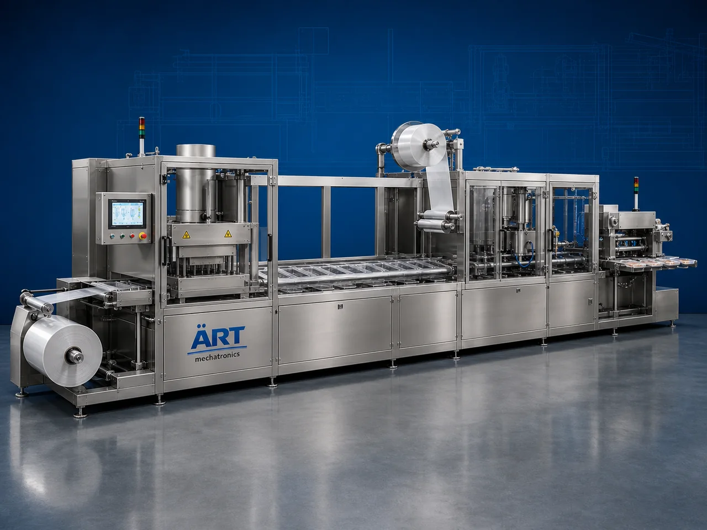

Thermoforming Sealing Machine (Automatic Thermoform Packaging System)
A Thermoforming Sealing Machine, also known as a Thermoform Packaging Machine, Vacuum Thermoforming Machine, Rollstock Packaging Machine, or Automatic Thermoform Fill Seal System, is an advanced industrial packaging solution designed for automatic film forming, tray forming, vacuum packaging, MAP gas flushing, product loading, heat sealing, coding, cutting, and high-speed packaging operations for meat products, seafood, medical products, dairy products, snacks, ready meals, pharmaceutical products, and FMCG packaging applications.

About the Thermoforming Sealing
Thermoforming sealing systems are widely used for:
- Vacuum thermoform packaging
- MAP thermoform packaging
- Meat thermoforming packaging
- Seafood packaging
- Medical product packaging
- Rollstock packaging operations
- Hygienic food packaging
- Retail packaging automation
The machine improves:
- Product freshness
- Shelf life extension
- Packaging appearance
- Airtight sealing quality
- Packaging consistency
- Production efficiency
- Retail presentation quality
Industrial thermoforming sealing machines use:
- Automatic film forming systems
- Servo synchronized indexing systems
- PLC and HMI automation controls
- Vacuum and MAP gas flushing systems
- Precision heat sealing and cutting mechanisms
to automatically form, fill, and seal packages with superior packaging quality and high production efficiency.
Thermoforming sealing machines are widely used in industries such as:
Food processing industries Meat processing industries Seafood industries Dairy industries Pharmaceutical industries Medical device industries Snack food industries FMCG industries
where hygienic packaging, vacuum sealing, and long shelf life are essential.
The machine is highly suitable for:
- Meat vacuum packaging
- Seafood thermoform packaging
- Medical product packaging
- Cheese and dairy packaging
- Snack food packaging
- Ready meal packaging
ART Mechatronics offers high-performance thermoforming sealing machines, engineered for continuous industrial operation, hygienic packaging performance, accurate sealing quality, and reliable long-term packaging automation.
Working Principle of Thermoforming Sealing Machine
- 1. Bottom Film Feeding Bottom rollstock film is automatically fed into thermoforming section through servo synchronized indexing systems.
- 2. Thermoforming Process Machine heats and forms packaging cavities or trays from plastic film using vacuum and forming systems.
Advanced thermoforming technology ensures accurate tray formation and consistent packaging quality.
- 3. Product Loading Operation Machine handles: ✔ Meat products ✔ Seafood products ✔ Dairy products ✔ Medical devices ✔ Snacks ✔ Ready meals ✔ Pharmaceutical products
accurately and continuously.
- 4. Vacuum / MAP Sealing Process Machine performs: Vacuum sealing MAP gas flushing Heat sealing Skin packaging Leak-proof sealing
for hygienic and freshness-protected packaging quality.
- 5. Coding, Cutting & Inspection Integration Optional systems include: Batch coding Date printing QR code printing Automatic cutting systems Vision inspection systems
- 6. Finished Package Discharge Finished packages discharged automatically for: Cartoning Case packing Retail distribution Cold chain logistics
Types of Thermoforming Sealing Machines
- 1. Vacuum Thermoforming Machine Designed for: ✔ Vacuum-packed food packaging applications
- 2. MAP Thermoforming Packaging Machine Suitable for: ✔ Modified atmosphere food packaging systems
- 3. Medical Thermoform Packaging Machine Uses: ✔ Sterile medical and pharmaceutical packaging systems
- 4. Skin Packaging Thermoforming Machine Designed for: ✔ Premium retail meat and seafood packaging systems
- 5. Servo Driven Thermoforming Machine Suitable for: ✔ Precision high-speed packaging operations
- 6. Fully Automatic Thermoform Packaging System Designed for: ✔ Complete industrial packaging automation lines
Industries Using Thermoforming Sealing Machines
🥩 Meat Processing Industry Fresh meat, processed meat, and vacuum thermoform packaging systems. 🦐 Seafood Industry Seafood products and freshness-protected thermoform packaging systems. 💊 Pharmaceutical & Medical Industry Medical devices, surgical products, and sterile packaging systems. 🥛 Dairy Industry Cheese products, dairy snacks, and chilled thermoform packaging systems. 🍟 Snack Food Industry Snack products, ready-to-eat foods, and retail thermoform packaging systems. 🛒 FMCG Industry Consumer food products and premium retail packaging systems.
Features & Advantages
- High-speed automatic thermoforming packaging operation
- Vacuum and MAP freshness preservation systems
- Hygienic and leak-proof packaging quality
- PLC and servo automation control systems
- Improves product freshness and shelf life significantly
- Reduces packaging wastage and labor dependency
- Supports multiple package sizes and product formats
- Reliable long-term industrial performance
- Smooth and continuous packaging operation
Technical Highlights
Machine Type: Automatic thermoforming sealing machine Industrial thermoform packaging system Rollstock packaging machine Packaging Material: PET films PP films Barrier films Medical-grade films Sealing Integration: Vacuum sealing systems MAP gas flushing systems Heat sealing systems Skin packaging systems Features: PLC control system Servo synchronization Touchscreen HMI Batch coding integration Automatic cutting systems Applications: Meat products Seafood products Medical devices Ready meals Snack foods Automation: Semi-automatic Fully automatic industrial systems
Turnkey Thermoforming Packaging Solutions
ART Mechatronics offers: Complete thermoforming packaging systems Automatic vacuum and MAP packaging solutions Packaging automation integration systems Conveyor synchronization systems Installation & commissioning After-sales service & AMC
Why Choose Art Mechatronics
Expertise in industrial packaging and automation systems Customized thermoforming packaging solutions for multiple industries High-performance and hygienic packaging technology Advanced PLC and servo automation systems Proven industrial packaging performance across sectors
Applications
Meat Processing Plants Seafood Packaging Industries Medical Device Manufacturing Units Dairy Processing Plants Snack Food Manufacturing Facilities Retail Food Packaging Plants
Get pricing & specs for the Thermoforming Sealing
Share the product, target capacity, current process and plant location. These details help our engineers discuss the right machine or line configuration.
One partner, from design to start-up
ART Mechatronics designs, manufactures, installs and commissions your Thermoforming Sealing solution with regional presence in India, UAE and Thailand.